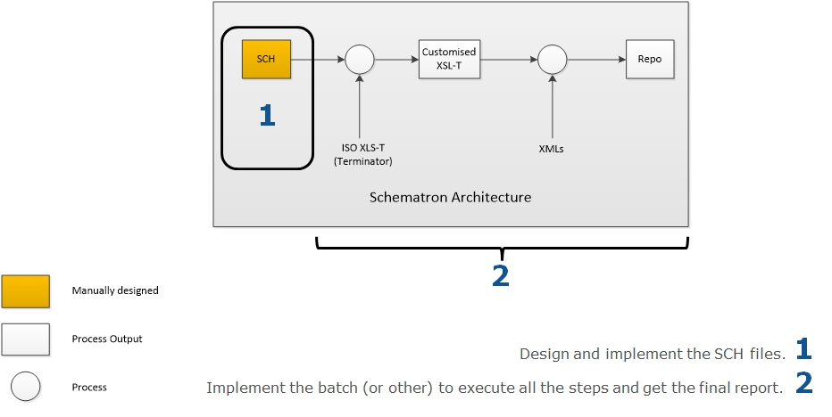
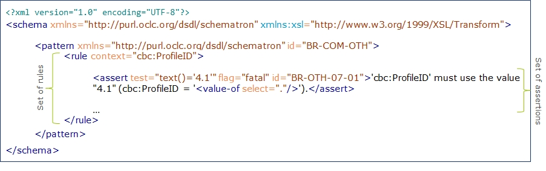
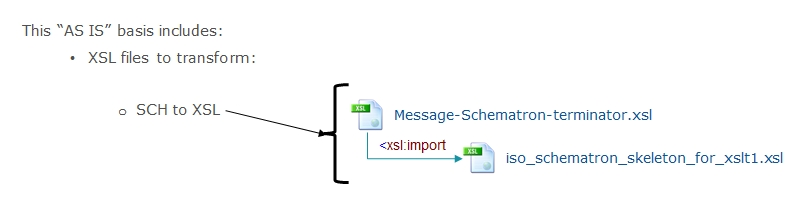
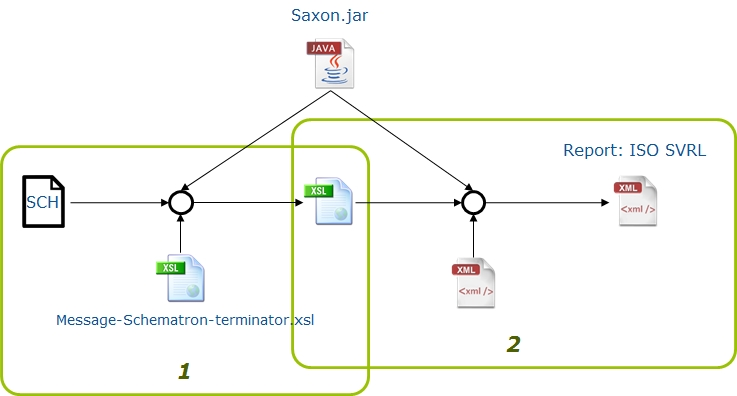

Validation
ISO Schematron
Schematron is a rule-based validation language to specify validation processes against XML documents. ISO Schematron is an ISO (ISO/IEC 19757-3:2006) and open standard. Please visit the ISO Schematron web-site for the technical specification and details.
ESPD Business Rules
The ESPD-EDM uses Schematron to validate business rules, the business requirements taken as input for these rules are specified in the ESPDint Business Document.
These business rules can be typified as:
-
Semantic validations: e.g. The "cac:TenderingCriterionResponse" in a Response document MUST match one, and only one, of the "cac:TenderingCriterionProperty" elements in the XML instance of the corresponding ESPD-Request;
-
Assertions about the presence or absence of patterns in XML documents: e.g. all business rules that apply to identifier nodes: mandatory attributes, structure of the identifier, etc.;
-
Code lists validations: e.g. values and attributes for each code list element;
-
Other validations that an XSD cannot do: e.g. Validates that one of the nodes has at least 1 child.
The following image shows different examples of validations:

The validation of code lists is explained in sections below.
Schematron Architecture
ISO Schematron executes the validations in two stages:
-
Design and implementation of the SCH files. SCH stands for Schematron Schema and contains the set of rules to be validated within the XML document.
-
Execution of the implemented validations in the SCH files:
-
Transformation of SCH files into XSLT files in order to be able to execute the validations against the XML.
-
Execution of the validations using the XSLT files to get the final report.
-

What does the SCH file contain?
-
Set of rules specifying the context (the element(s) and/or attribute(s) which the assertions affect);
-
Each rule have a set of assertions with the tests that must be evaluated in the context.

Execution
As a basis of the implementation, it has been taken into account:
-
Schematron "skeleton" implementation in XSLT.

This example describes the execution of the validation process using the Saxon library to execute XSLT files and the XSLT provided as a basis:

Code list validation Architecture
Business rules related to code list validates:

Architecture for Code List validation
The validation of the code lists needs an extra step on the process before executing the Schematron process. This is because it needs Genericode (GC) as input files.
-
The first step is the generation of Genericode (GC) files. These files contains information about the values and identifiers of each code list.
-
GC files are found in the /codelists/gc folder.
-
-
Design and implementation of the CVA files. CVA stands for Context and Value Association:
-
Execution of the implemented validations in the CVA files:
-
Transformation of CVA files into SCH files.
-
Continue with the Schematron execution process: (1) transformation of SCH files into XSLT and execution of the validations using the XSLT files to get the final report.
-

What does the SCH file contain?
-
Association between one or more elements of the XML and one or more code list (specified in the Genericodes).
-
The declaration of which attributes of the XML identify information of the Genericode.
The implementation of the CVA file has the following structure:

Execution
As a basis of the implementation, it has been taken into account:
-
Schematron implementation of CVA files for validation from CRANE SOFTWRIGHTS LTD

This example describes the execution of the validation process using the Saxon library to execute XSLT files and the XSLT provided as a basis:

ESPD Validation Architecture
The validation of a ESPD XML has the following life-cycle:

-
The validation of the XML starts by ensuring that the input XML follows the structure defined by the XSD: QualificationApplicationRequest.xsd XSD Schema or QualificationApplicationResponse.xsd XSD Schema. These schemas can be found under the folder ubl-2.3/xsdrt/maindoc (or the equivalent documented xsd folder).
-
If the validation of the structure is not successful, the process stops and sends the report with the list of errors.
-
If the validation of the structure is successful, the process continues with the code list validations and business rules. All errors found (if any) are listed in the report.
-
-
Depending on the type of application (ESPD Request or ESPD Response), different types of validations are executed:

ESPD Request
-
XSD Validation against QualificationApplicationRequest-2.3.xsd
-
Code list validations. These are common for both, Request and Response:
-
Validation of the code list values: 01 ESPD-codelist-values.cva
-
Validation of the identification of the code list: 01 ESPD Common CL Attributes.sch
-
-
Business rules related to the cardinality of the schema, that cannot be controlled using the XSD: 02 ESPD Req Cardinality BR.sch
-
Business rules used to validate the criteria data structure:
-
Validations common for Request and Response: 03 ESPD Common Criterion BR.sch
-
Validations specific for Request applications: 03 ESPD Req Criterion BR.sch
-
-
Other business rules:
-
Other validations which are common to Request and Response applications, such as the mandatory use of the attribute schemeAgencyID for identifiers: 04 ESPD Common Other BR.sch
-
Specific business rules for Request applications, in this case, the validation of the correct value for cbc:CutomisationID element: 04 ESPD Req Other BR.sch
-
Business rules related to the procurer: 05 ESPD Req Procurer BR.sch
-
Specific business rules: 05 ESPD Req Specific BR.sch
-
ESPD Response
-
XSD Validation against UBL-QualificationApplicationResponse-2.3.xsd
-
Code list validations. These are common for both, Request and Response:
-
Validation of the code list values: 01 ESPD-codelist-values.cva
-
Validation of the identification of the code list: 01 ESPD Common CL Attributes.sch
-
-
Business rules related to the cardinality of the schema, that cannot be controlled using the XSD: 02 ESPD Resp Cardinality BR.sch.sch
-
Business rules used to validate the criteria data structure:
-
Validations common for Request and Response: 03 ESPD Common Criterion BR.sch
-
Validations specific for Response applications: 03 ESPD Resp Criterion BR.sch
-
-
Other business rules:
-
Other validations which are common to Request and Response applications, such as the mandatory use of the attribute schemeAgencyID for identifiers: 04 ESPD Common Other BR.sch
-
Specific business rules for Response applications, in this case, the validation of the correct value for cbc:CutomisationID element: 04 ESPD Resp Other BR.sch
-
Business rules related to the economic operator: 05 ESPD Resp EO BR.sch
-
Response Specific business rules: 05 ESPD Resp Specific BR.sch
-
Specific business rules for economic operators registered in a pre-qualification system: 05 ESPD Resp Qualification BR.sch
-
Specific business rules depending on the role: 05 ESPD Resp Role BR.sch
-
UUID Criterion Validation
Each Criterion is defined in e-Certis and must use the Universally Unique Identifier (UUID) supplied by e-Certis:
-
These UUIDs are 'constant', meaning that they are maintained by DG GROW and need to be used compulsory as they were issued by DG GROW.
-
The value of each UUID are defined in the spreadsheets:
ESPD validates that the UUID defined in the ESPDRequest XML or ESPDResponse XML are the ones supplied by e-Certis:
| Spreadsheet row | XSD Path |
|---|---|
\{CRITERION |
cac:TenderingCriterion/cbc:ID |
\{QUESTION_GROUP |
cac:TenderingCriterion/cac:TenderingCriterionPropertyGroup/cbc:ID |
\{QUESTION_SUBGROUP |
cac:SubsidiaryTenderingCriterionPropertyGroup/cbc:ID |
Every QUESTION_GROUP and QUESTION_SUBGROUP that has the same structure (meaning, QUESTION or QUESTION_SUBGROUP), share the same UUID, as they are the same.
Tendering Criterion
The validation of each criterion (cac:TenderingCriterion element) has the aim to check:
-
cbc:ID, cbc:CriterionTypeCode, cbc:Name and cbc:Description are mandatory;
-
cbc:ID and cbc:CriterionTypeCode values match with the ones supplied by e-Certis;
-
cac:TenderingCriterionPropertyGroup structure matches with the QUESTION_GROUP supplied by e-Certis (see Tendering Criterion Property Group and Subgroup section).
Tendering Criterion Property Group and Subgroup
The same validations are executed for the first level group of properties and sub-groups of properties. The rules applied are:
-
The cbc:ID and cbc:PropertyGroupTypeCode are mandatory elements and their values are the ones supplied by e-Certis in the corresponding cbc:TenderingCriterion;
-
cac:TenderingCriterionProperty structure matches with QUESTION supplied by e-Certis (see Tendering Crtierion Property section);
-
cac:SubsidiaryTenderingCriterionPropertyGroup matches with QUESTION_SUBGROUP supplied by e-Certis (for each property group, the same validations are applied).
Tendering Criterion Property
The validation of Tendering Criterion Property (cac:TenderingCriterionProperty element) is checked as follows:
-
cbc:TypeCode and cbc:ValueDataTypeCode are mandatory elements and match with the ones supplied by e-Certis;
-
cbc:ID and cbc:Description elements are mandatory, although their values are not validated;
-
If cbc:TypeCode value is "CAPTION" or "REQUIREMENT", cbc:ValueDataTypeCode value must be "NONE".
Interoperability testbed
The European Commission (EC) ISA2 Programme provides an Interoperability Testbed where Stakeholders can freely test these validation artefacts.
All the ESPD-EDM artefacts necessary to perform the validation are set up in the testbed. Thus developers and integrators can test the validity of the ESPD-Request and ESDP-Response XML instances by uploading the instances in the testbed and launching the validation.
Use this URL to upload and execute the validations: Upload.